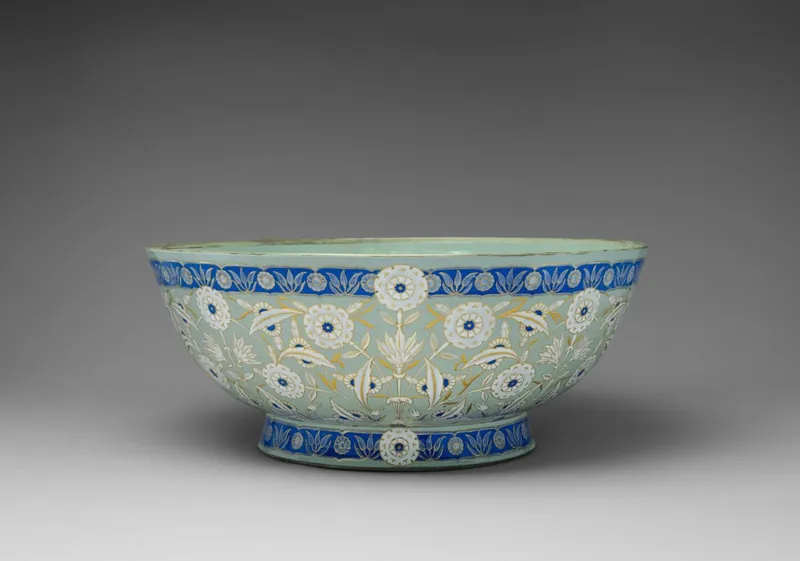
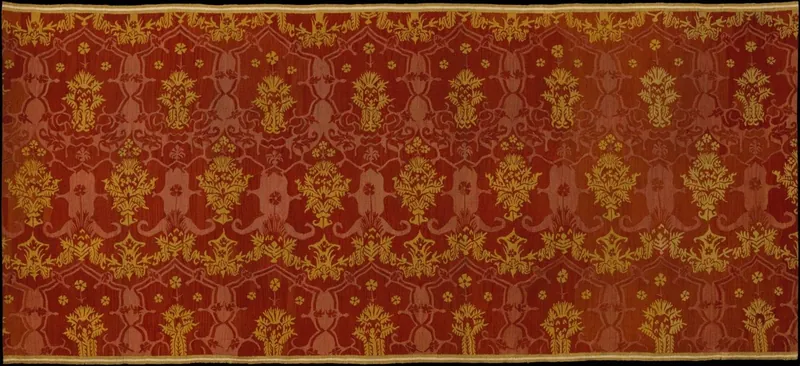
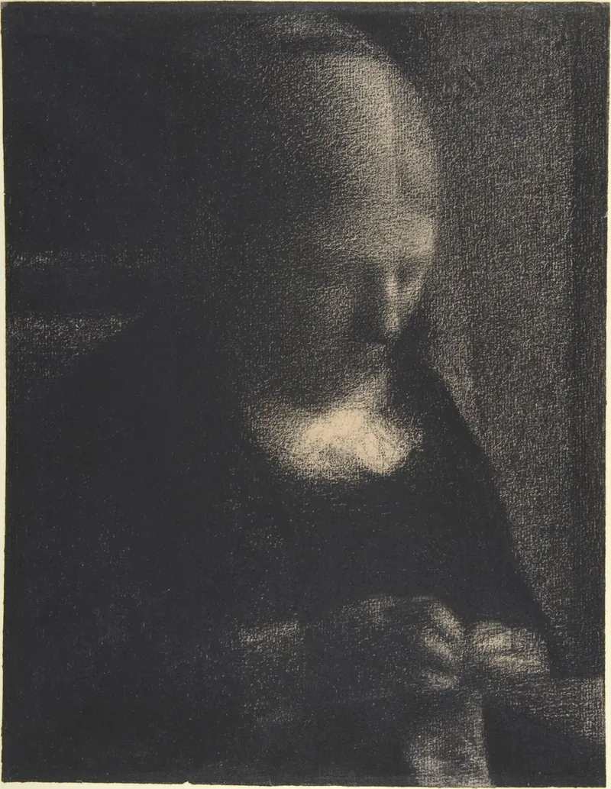

Art, artists
and places.
Together on Siang.
Siang is an art hub. See what is on, hear artists talk about their work on your phone, in Thai or English, then go and see it for real.


What is on today.
Work from shows open near you. Nearer and closing sooner come first.
This sample follows Ploy S. Work by the artists you follow shows up here.








You’re there.
Scan at the door.
Or type the short code under the QR at siang.co. It opens just the same.
Every work in the room
opens on your phone.
In front of a work? Type the number on its label and it opens.
Hear the artist.
Then just ask.
Artists record their own story on their phone. Listen while you stand in front of the work, and ask about it right there.
This is the slowest bowl in the series. Every flower is painted by hand, one at a time. I wanted it to feel still, like water resting in a bowl.
Sample soundThe whole festival
on one map.
Hundreds of programmes across the city. Pick a day and an area, and keep it on your phone before you leave home.
Claim your name
on Siang.
Your name on Siang is where your work lives. Add your work and record your story on your phone. Galleries and organisers can invite you to a show, but your work goes in only when you say yes.
Your work and your voice stay yours. You get a copy of every question about your work, and Siang takes no cut of any sale.
Claim your name at siang.co
If you show art
Siang helps festivals, venues, galleries and show organisers open every work on the visitor’s phone.
Show art with SiangGo and see
some art.
Open Siang in your phone’s browser. iOS and Android apps will follow.